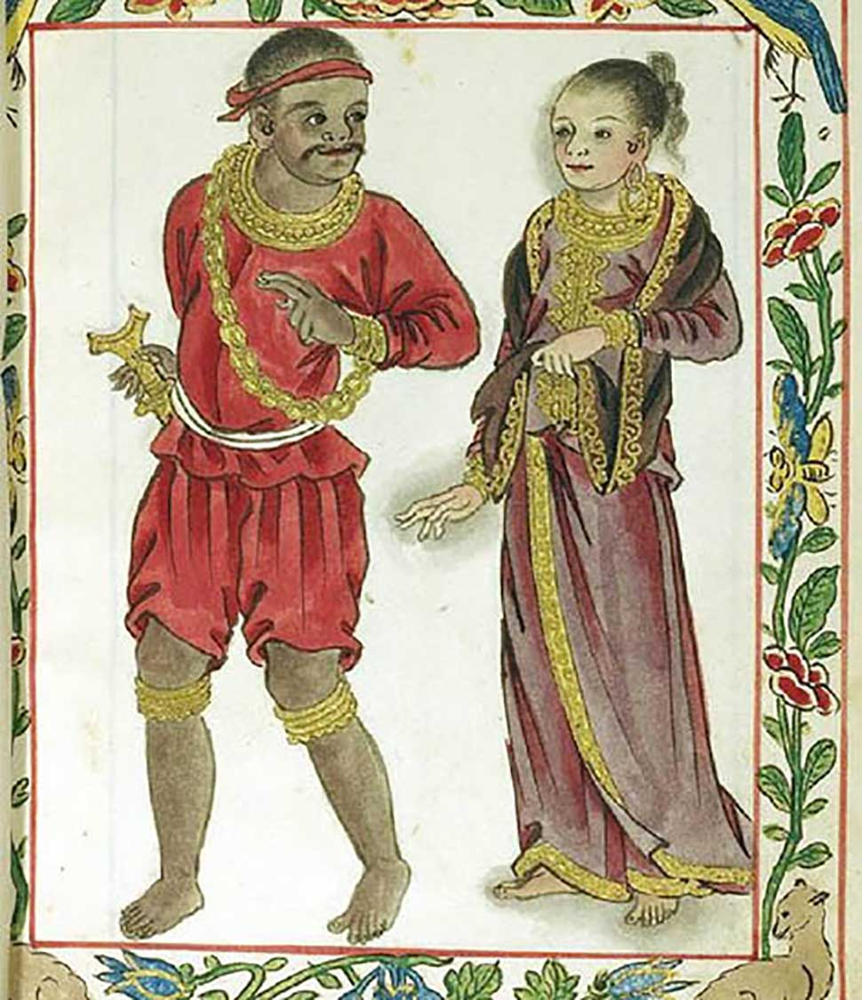
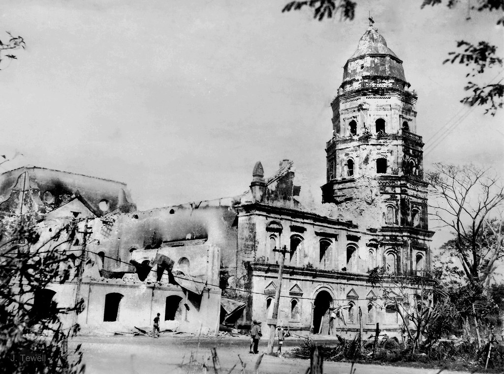
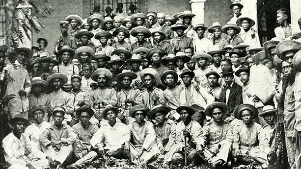
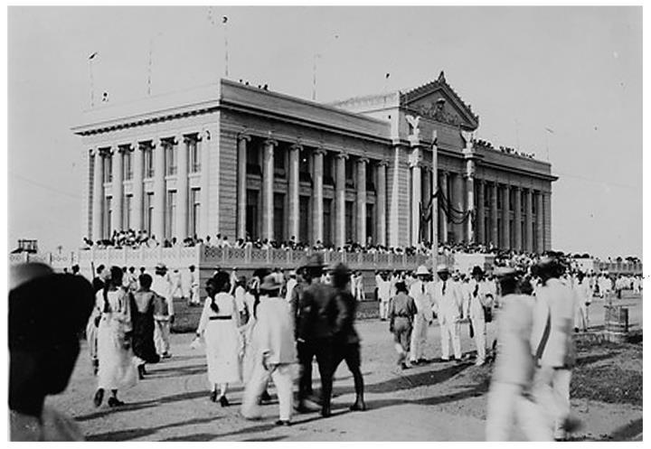
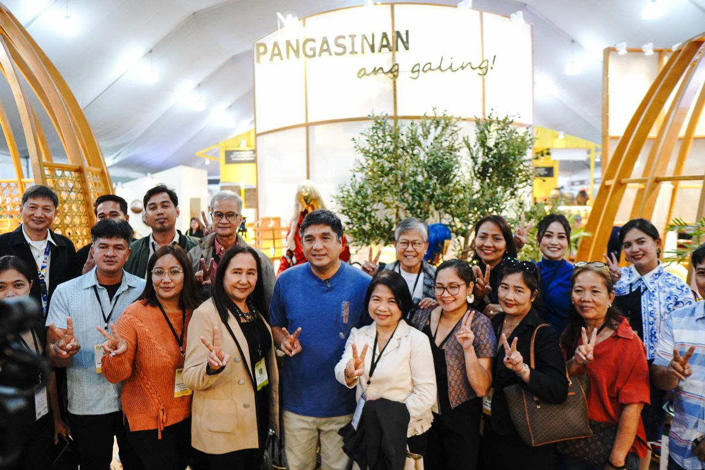
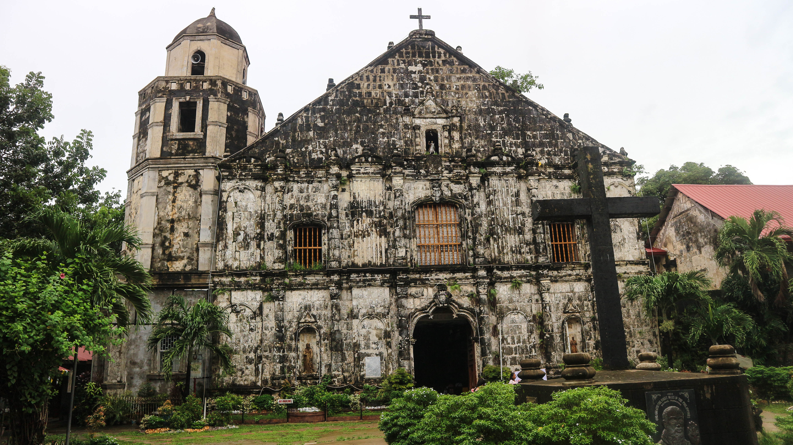

Historical Background
Pangasinan has a deep historical heritage influenced by trade, colonization, and cultural development. Its name comes from “asin” meaning salt.
History Timeline
Pre-Colonial Era
Pangasinan was originally settled by early Austronesian people who lived through fishing, farming, and salt-making. Trade with nearby regions and Asian neighbors was already active before foreign colonization.

Spanish Era (1572)
The Spanish arrived in 1572 and took control of Pangasinan. They introduced Christianity and organized settlements into towns under Spanish rule.

Revolution Period
People from Pangasinan joined the revolution against Spain. They supported the fight for independence and contributed soldiers and resources.

American Period
During American rule, education and infrastructure improved in the province. Schools, roads, and public systems were established and expanded.

Modern Era
Today, Pangasinan is a developed province in Northern Luzon. It is known for tourism, agriculture, fishing, and growing urban centers.


Saint James the Great Parish Church
Saint James the Great Parish Church, commonly known as Bolinao Church, is a Spanish colonial Roman Catholic church located at Brgy. Germinal in Bolinao, Pangasinan, Philippines. It is under the jurisdiction of the Diocese of Alaminos. The church was made out of black coral stones. The church underwent series of natural and man-made calamities, such as the 1788 earthquake, 1819 fire incident, and Typhoon Emong in 2009.
Why History Matters
Understanding Pangasinan’s history helps preserve its identity and culture for future generations.
Back to About